La rencontre
Un échange pour comprendre votre histoire, vos envies et imaginer ensemble la séance.
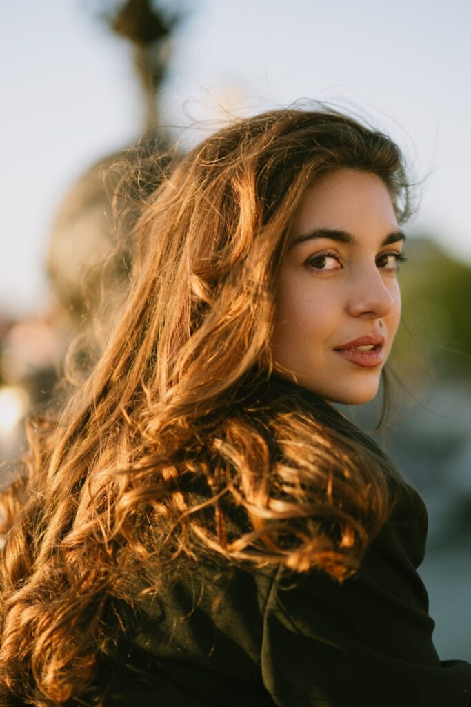
Photographe et artiste · Paris — Lyon
Des portraits picturaux pour révéler la force, la douceur et la singularité de celles et ceux qui passent devant mon objectif.
Découvrir la galerie ↘Œuvres choisies
MMXXVI
01 — Vision
« Une photographie n’arrête pas le temps. Elle lui donne une mémoire. »
Chaque image est pensée comme une pièce unique : un manifeste visuel où la lumière devient matière, où la couleur et la texture convoquent une dimension picturale.
Œuvres choisies
Portraits, maternités, duos et récits de marque. Une sélection d’images entre clair-obscur, mouvement et présence.
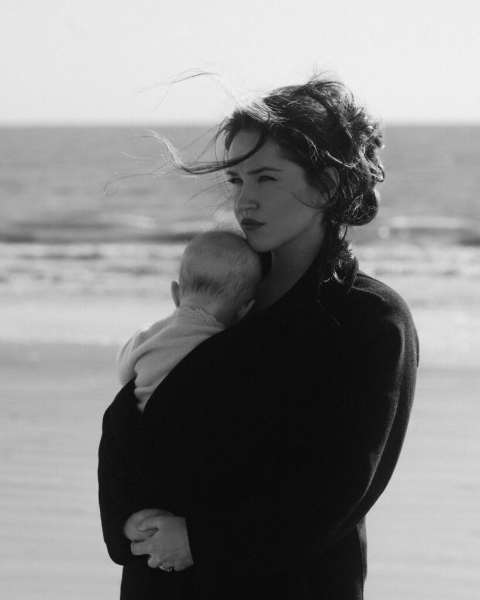
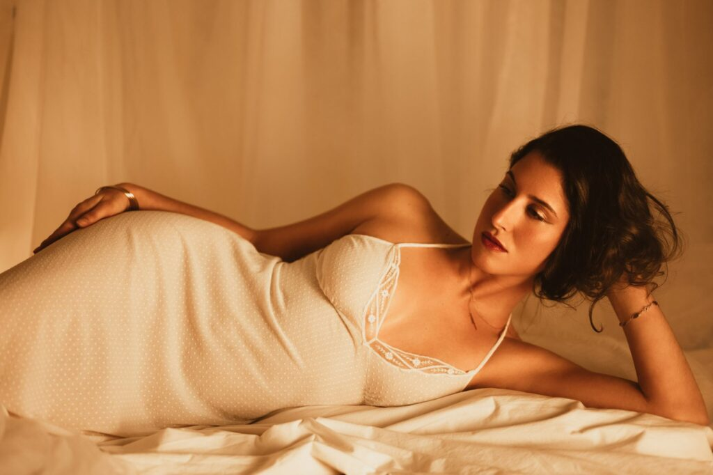
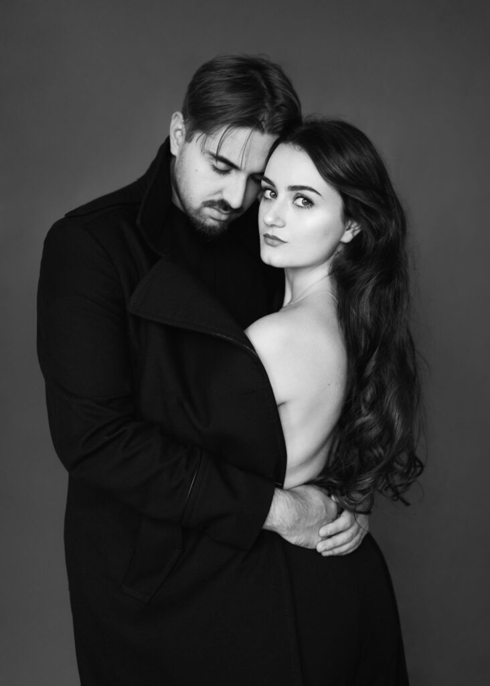
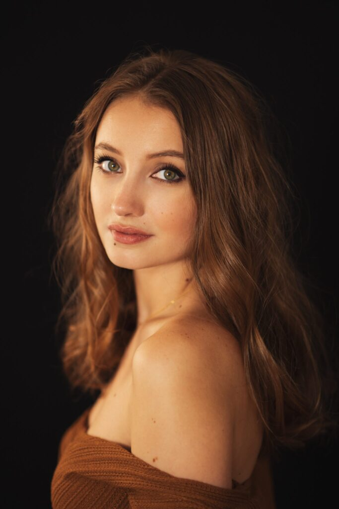
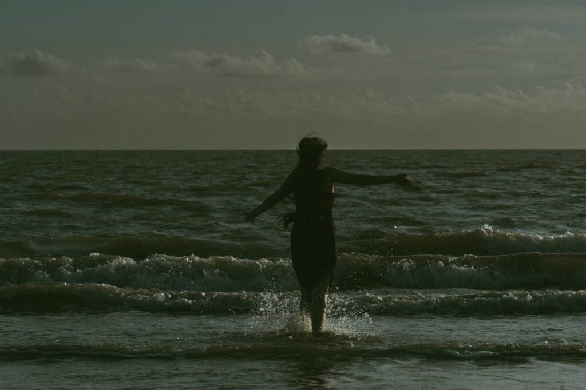
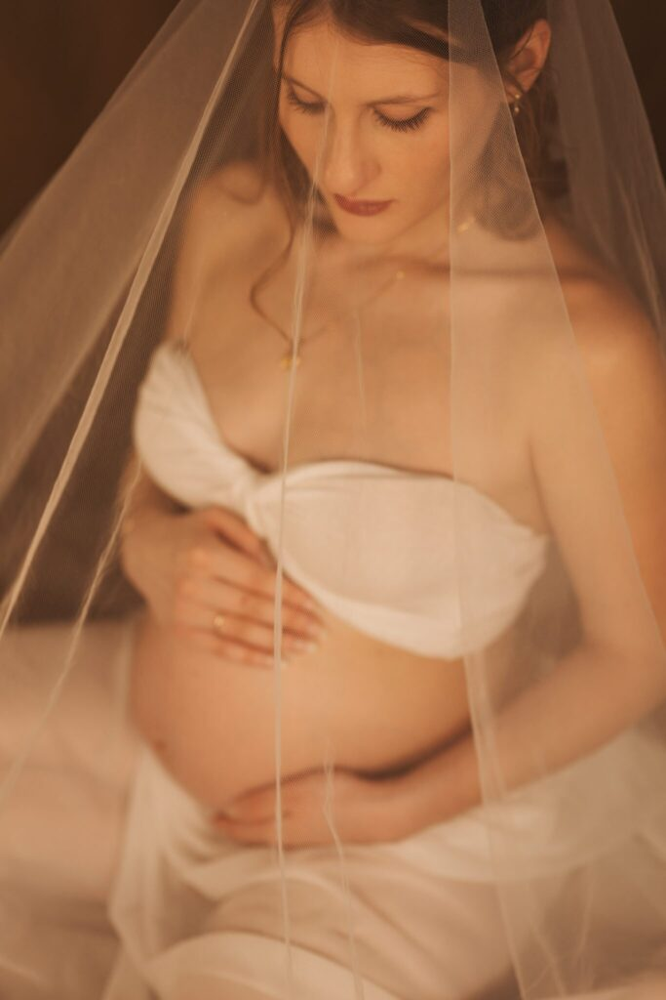
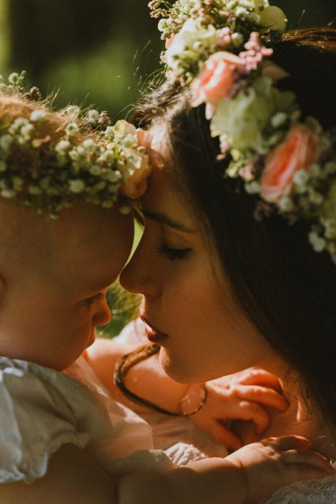
02 — L’expérience
Être photographié·e par Mahault, c’est se redécouvrir : retrouver sa force, sa douceur, sa singularité. C’est s’offrir une image qui traverse le temps et échappe à l’éphémère.
Un échange pour comprendre votre histoire, vos envies et imaginer ensemble la séance.
Une direction sensible, une lumière sculptée et l’espace pour être pleinement vous.
Une sélection minutieuse, retouchée comme une matière picturale et livrée avec soin.
03 — Les prestations
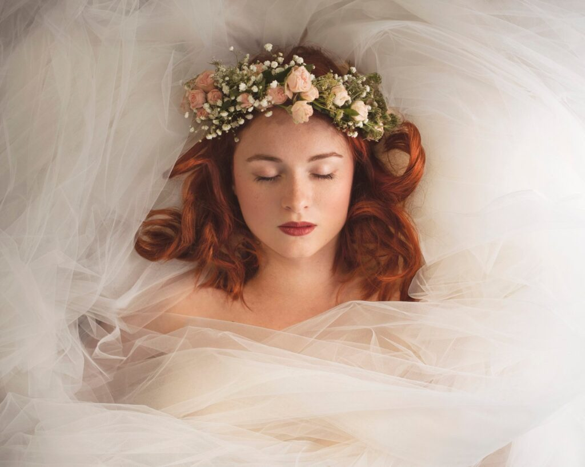
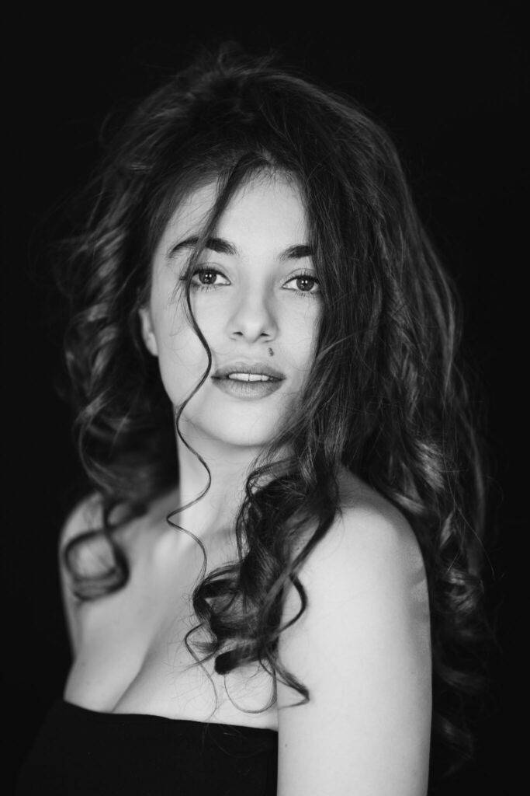
04 — Mahault
Depuis plus de quinze ans, Mahault Hottelart développe une pratique photographique centrée sur le portrait, pensé comme lieu de rencontre entre l’intime et l’universel.
Installée entre Paris et Lyon, elle inscrit ses séries personnelles et ses commandes dans une démarche artistique exigeante, en dialogue avec l’histoire, l’art et la philosophie.
Femmes photographes
Nikon Plaza, Paris — 2025
The Huts Magazine
2021
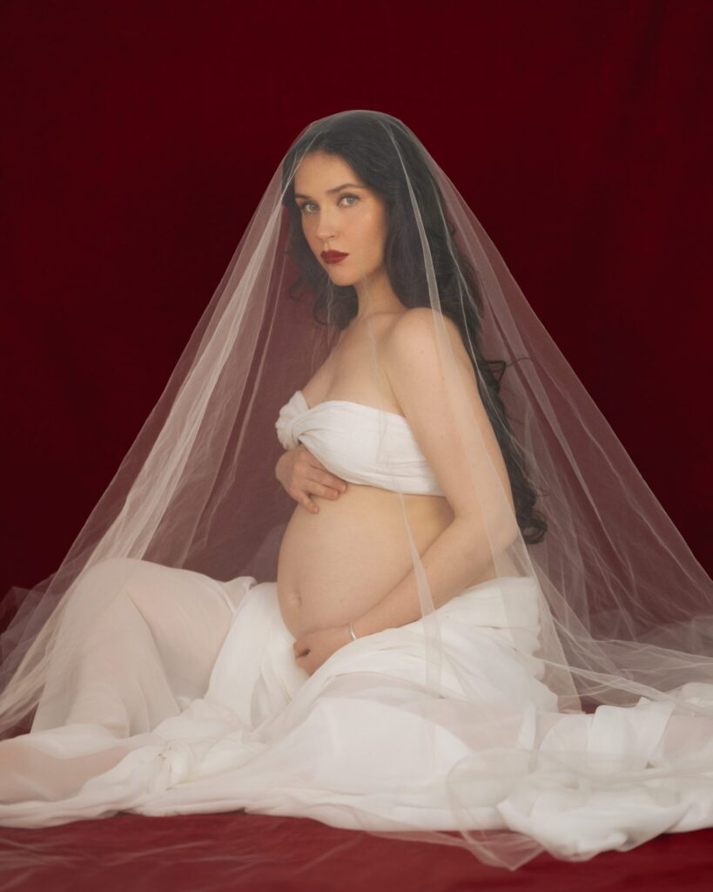
Votre histoire mérite une image
Pour une séance portrait, une collaboration de marque ou un projet éditorial, racontez-moi votre idée.
Commencer une conversation ↗